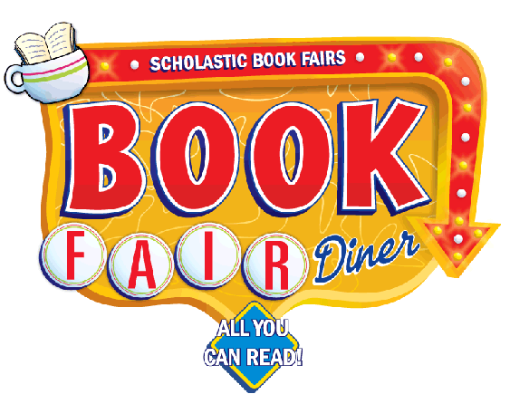

 Location: Small Gym
Got a hunger for good books? Then be sure to visit McKenzie's Book Fair Diner! Click here for a printable version of the book fair special events
Be part of the Book Fair Bulletin Board! Send a photo (in JPEG format) of your child reading in his/her favorite spot to
|
|
Book Fair Hours |
McKenzie’s Menu of Book Fair Special Events |
Tuesday |
Tuesday, February 9th at 3:45 p.m. - Cupid’s arrow strikes again with a special Valentine’s-themed Story Time and Craft. * Our very own Oshana will read the story! |
Wednesday |
Wednesday, February 10th at 6:30 p.m. - Storyteller Ernie Love* shares bedtime tales! Wear your pajamas, bring your favorite stuffed animal and listen to wonderful yarns spun by a talented storyteller! A sweet-dreams snack will be provided. *Ernie Love is a former elementary and middle school classroom teacher. After 31 years in the classroom, he “retired” to pursue other interests. During his tenure as a classroom teacher, storytelling was an ongoing activity in his classroom, at school events in his district, and at various storytelling festivals. |
Thursday |
Special of the Day: 2 Great Ways to Share Reading! Please bring gently-used books that you no longer read to donate to students at Carmen Buckner School. (A donation bin is currently located in the lobby & will be moved to the small gym at the start of the Book Fair.) Or, donate spare change at the Book Fair to Scholastic’s One For Books program, which provides books to children in need. |
Return to McKenzie PTA Home Page